日本旅行網誌
2025年夏日關西之旅 | 大阪・京都・奈良
第一次一起出國旅行，在第一次的分手危機之後，多虧大溪國中繁忙的事務與出發前的心理疙瘩，直到踏上飛機之前，我們彼此都還沒有太多的興奮感，更多是邱昀學校課程的處理會不會造成組長困擾，還有我自己心中的murmur擔心邱昀會玩得不盡興...
2025/07/24 第一次一起出國旅行，在第一次的分手危機之後，多虧大溪國中繁忙的事務，與我自己出發前的心理疙瘩，直到踏上飛機之前，我們彼此都還沒有太多的興奮感。
更多是邱昀學校課程的處理會不會造成組長困擾，還有我自己心中的 murmur 擔心邱昀會玩得不盡興。但當我們真正坐在29號跑道旁，看著飛機準備起飛時，那種期待感終於開始湧現...
飛機降落後，旅行的感覺開始浮現。我看著其他匆忙的旅客，再望向邱昀事先預訂的南海地鐵，心中產生了資本主義的優越感。
這時候邱昀還不知道我這一趟的禮物，傻傻地用著 50-200 的鏡頭說，好像不夠廣，我心中在偷笑。那個當下，我們都還不知道接下來這趟旅程會帶給我們多少驚喜和回憶。
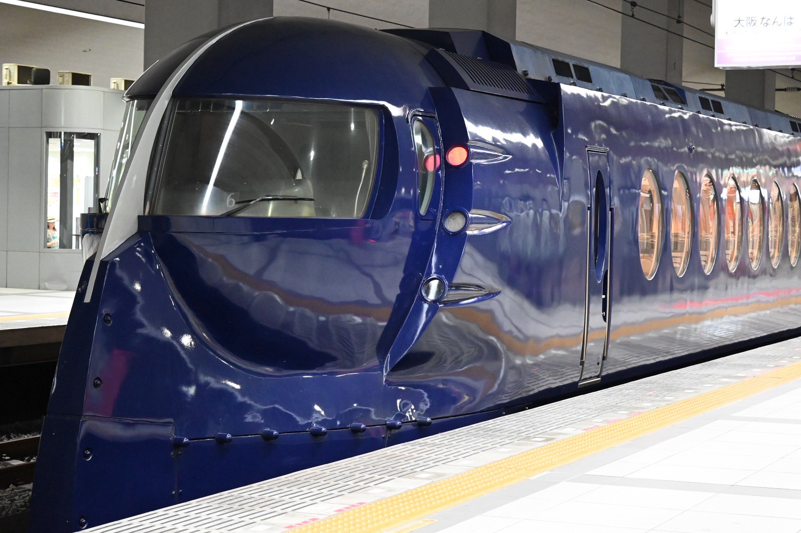
經過南海地鐵與一連串複雜的交通後終於抵達民宿。運氣一向不能說不好只能說很差的我們，馬上遇到第一道關卡，因為住宿網站沒有提供 self-check-in 的密碼。
我們卡在門口好一陣子才成功進入房間。放下心的那一剎那，我們發現房間冷氣瘋狂滴水...還好沒有台灣超商味道的日本7-11食品撫慰了我們的心靈。第一天就這樣在各種意外中度過了。
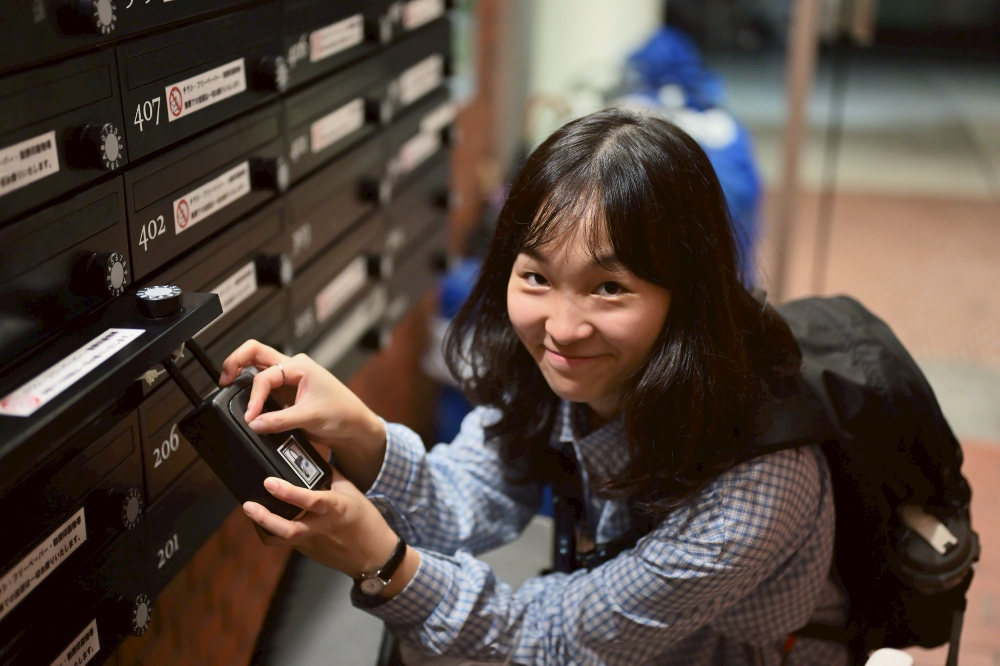
第二天正式開始我們的旅程。第一站我們來到了大阪市立美術館，出乎預料的常設展品幾乎都是中國式的佛像，但是大阪國寶非常可愛。
也見到了日本戰國時代的娃包（裝印章的）。邱昀在美術館中認真地欣賞每一件展品，那專注的神情讓我忍不住按下快門。這張照片完美捕捉了她沉浸在藝術世界中的模樣。
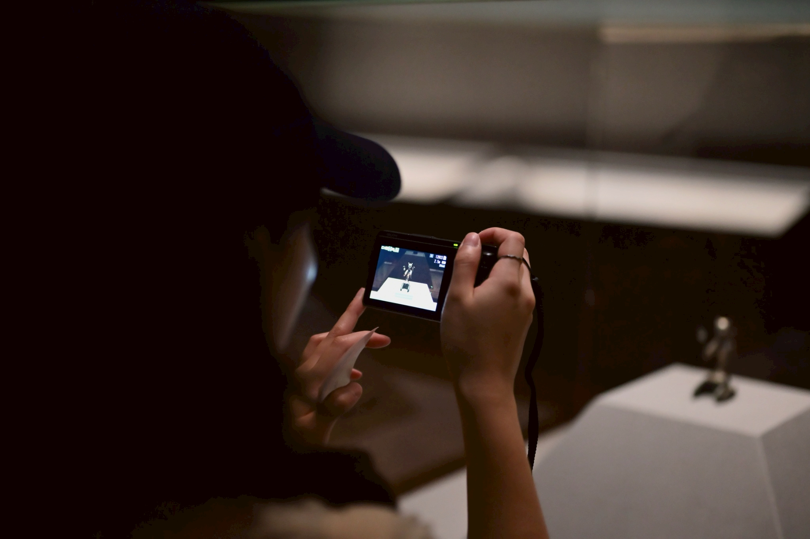
美術館結束後，我們抵達了自然史博物館與周邊的植物園。蜂類的特展非常的有趣，見到了各種的寄生蜂類型。
我跟邱昀在館內比賽，看誰比較快能從一群蝴蝶中找到不同的種類。生物老師果然無法挑戰，被完敗的我甚至在解釋後都還是分不出來。最後離開前，我在生物老師指導下，隔著一條馬路拍了這張我覺得很好看的紀念照！
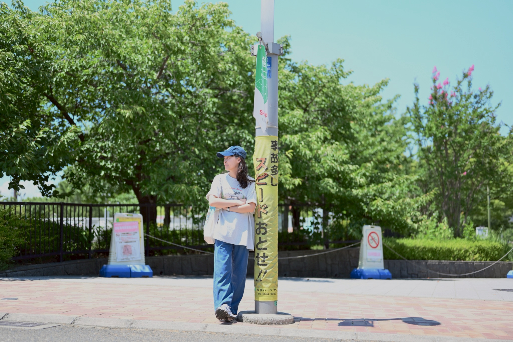
離開天王寺的博物館後，我們來到的道頓堀、心齋橋一段看看。午餐隨意地找了在巷弄中發現的拉麵，店員事後還很認真的在 google 評論上回應邱昀。
我們還遇到了跟麵包超人動作一樣的婆婆，那是相當可愛！這張麵包的照片記錄了我們在大阪街頭的隨性探索，每一個轉角都有意想不到的驚喜等著我們發現。
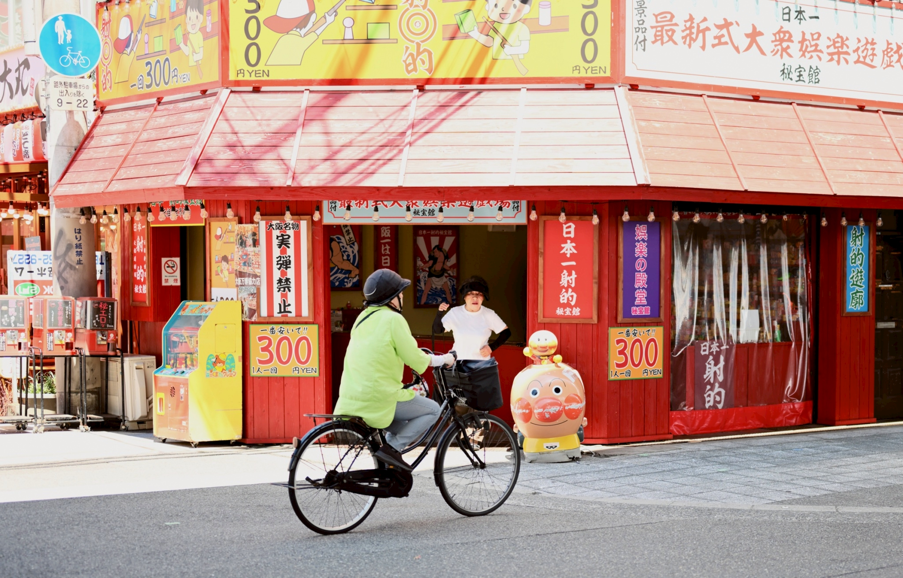
第二天最後的行程，是我最期待的天神祭。有別於台灣的傳統祭典，天神祭相當的純粹。一個中央舞台不動敲打著同一個節奏，舞者們只有一個動作，變換速度、方向、節奏不斷持續著。
周圍的孩子們臉上都洋溢著很棒的表情。這張照片捕捉到了神祇與孩子們的純真互動，那種毫無雜念的快樂表情，讓整個祭典充滿了溫馨的氛圍。
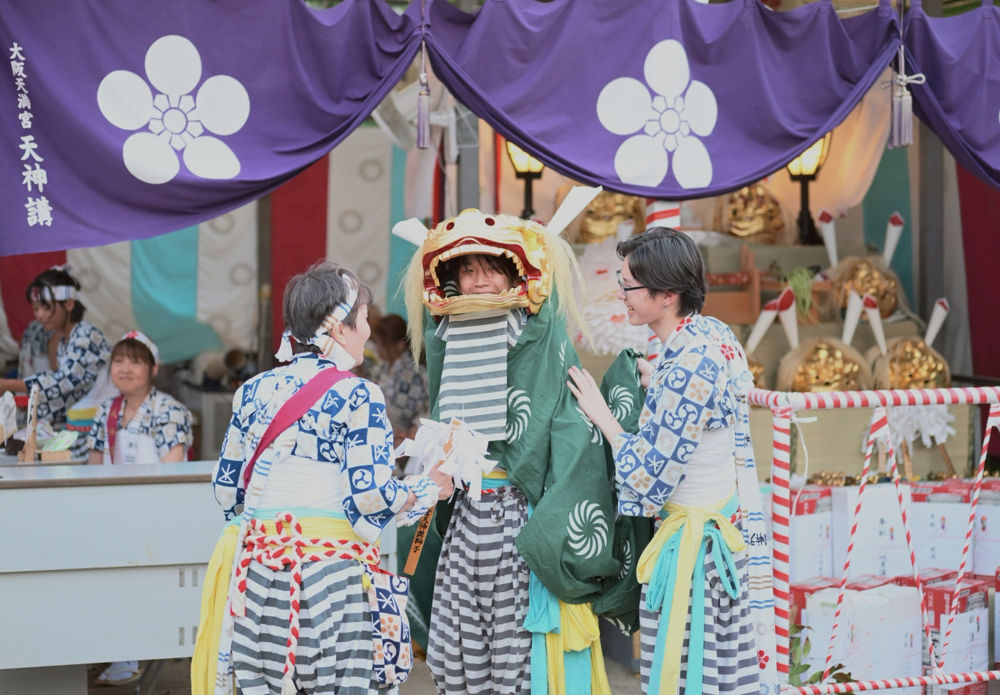
天神祭正式煙火還沒施放，邱昀跟我已經馬不停蹄地踏上回程的路。不只是因為人潮實在太壅擠，是一位我們目標是心心念念的 Shake Shack。
雖然錯過了煙火，但這份滿足感彌補了所有的遺憾。有時候旅行就是這樣，變化遠比計畫更有趣。
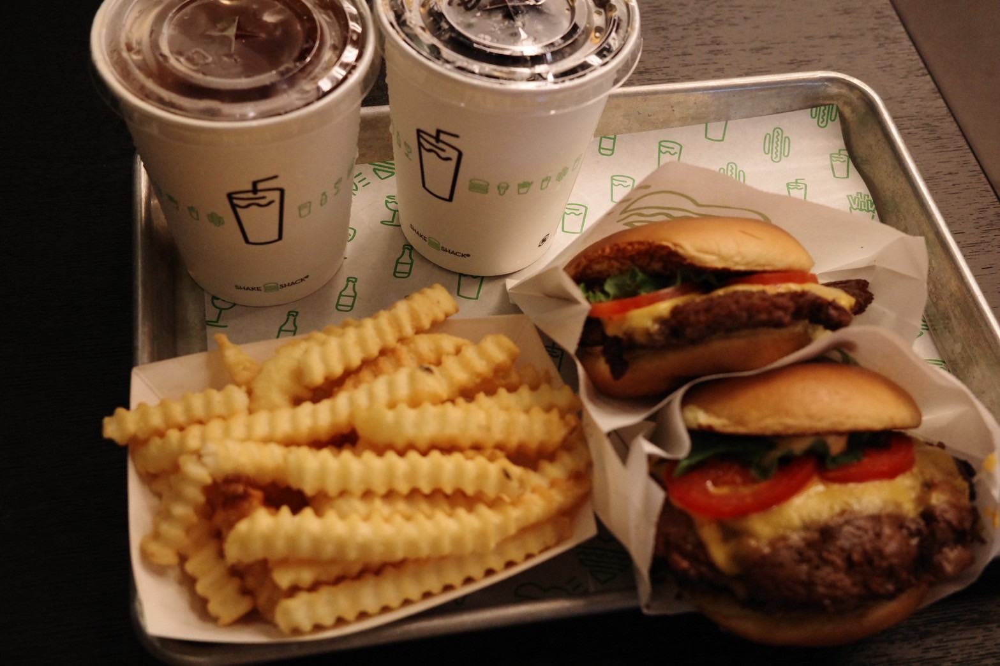
第三天我們從難波前往奈良，第一站是春日神社。神社紅色的格局配上一旁的神木，事後回想起有那麼一些小時候在看犬夜叉的悸動。
喔對了這時候邱昀已經拿著 GRIIIx 東晃西晃囉。這張很好看的神社就是她拍攝的！紅色的神社在陽光下特別醒目，搭配周圍的綠意，構成了一幅完美的日式風景畫。
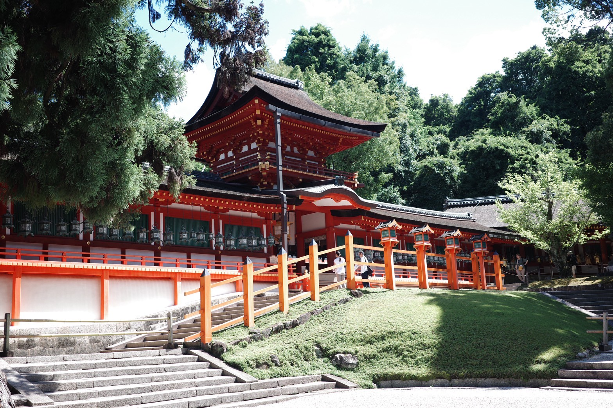
但是後面那張很帥的住持(?)就是我們 zf 的產品囉。這張照片展現了傳統日式建築的美學，以及在其中工作的人們所展現出的莊嚴感。
無論是邱昀的GRIIIx還是我們的相機，都在這個充滿歷史氛圍的地方找到了最佳的拍攝角度。每一個快門的按下，都記錄著我們對這份美好的感動。
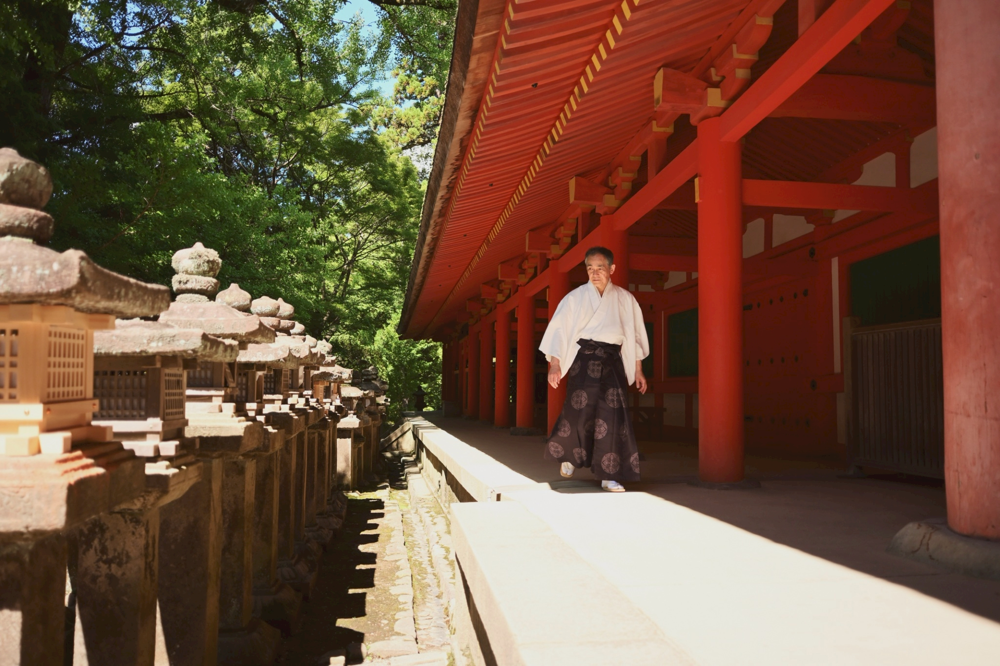
雖然很熱很累，我又不導航，惹得邱昀很躁，但是我還是有在奈良拍出兩張非常漂亮的邱昀！這是第一張，邱昀與溫馴的奈良鹿互動的珍貴瞬間。
奈良的鹿群真的非常溫馴可愛，完全不怕人類的接近。看著邱昀小心翼翼地靠近並與小鹿互動，那種純真的快樂表情讓我按下了快門。這張照片成為了我們奈良行程中最療癒的回憶之一。
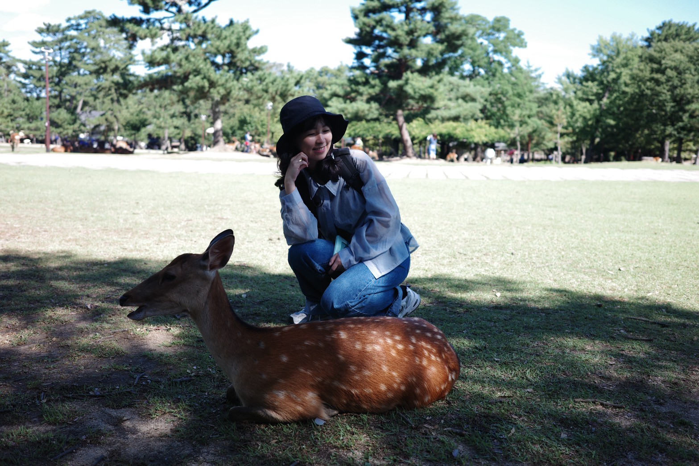
這是在奈良拍出的第二張非常漂亮的邱昀！在春日大社的環境中，她與自然的和諧互動展現出一種寧靜的美感。
背景的古老建築和前景的邱昀形成了完美的構圖，這種人文與自然相結合的畫面，正是日本古都奈良最迷人的地方。即使我們在導航上有些小摩擦，但這些美好的瞬間讓一切都變得值得。
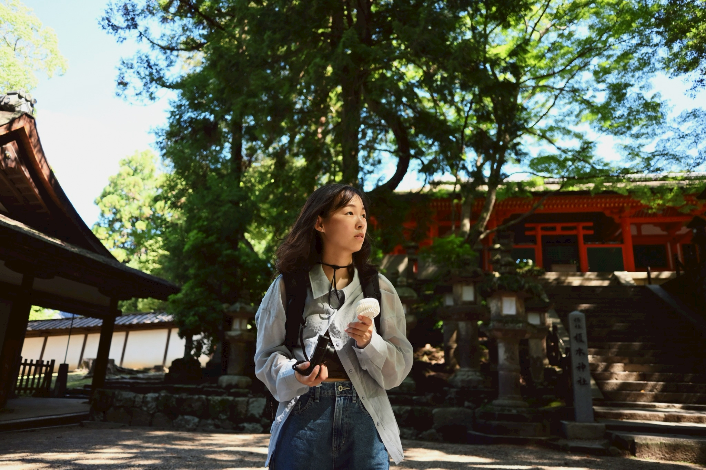
出發前我對於清水寺其實沒有太多印象，只知道柯南取景於這個酷地方。實際走訪之後，這是個很酷的地方啊！
清水寺的木造建築懸空而建，從這個角度看去格外壯觀。無論是建築本身的歷史價值，還是它所在位置的景觀，都讓人深深震撼。難怪這裡會成為京都最具代表性的景點之一。
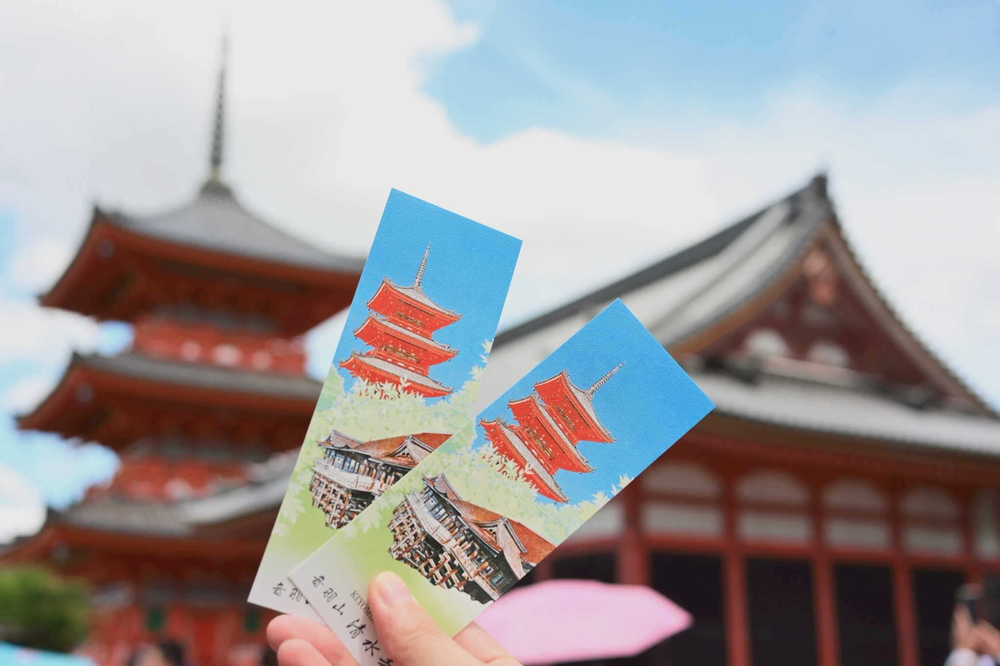
我們在這裡玩了GPT攝影大賽，最後由邱昀這張有著唯美散景又流露一絲靜謐的照片突圍。
這張獲勝作品展現了邱昀優秀的攝影技巧和美感。背景的柔美散景營造出夢幻的氛圍，而主體的清晰度和光線運用都恰到好處。這不僅僅是一張照片，更是她對美的獨特詮釋和感受的體現。
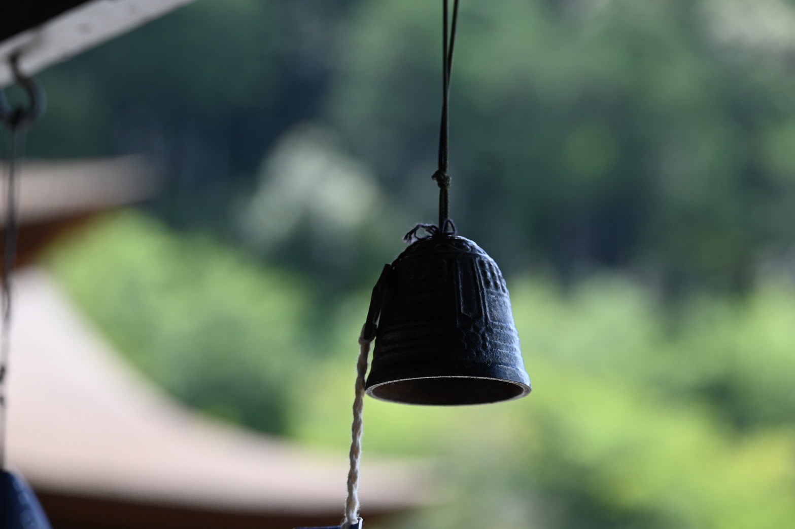
很喜歡當地人投入文化觀光的精神，現代的販賣機絕對是保存當地歷史脈絡的關鍵。展現了傳統與現代的結合。
在二三年坂的石板路上，傳統的人力車依然是最受歡迎的交通方式之一。車夫們穿著傳統服裝，為遊客提供最道地的京都體驗。這種對文化傳統的堅持，正是京都魅力所在。
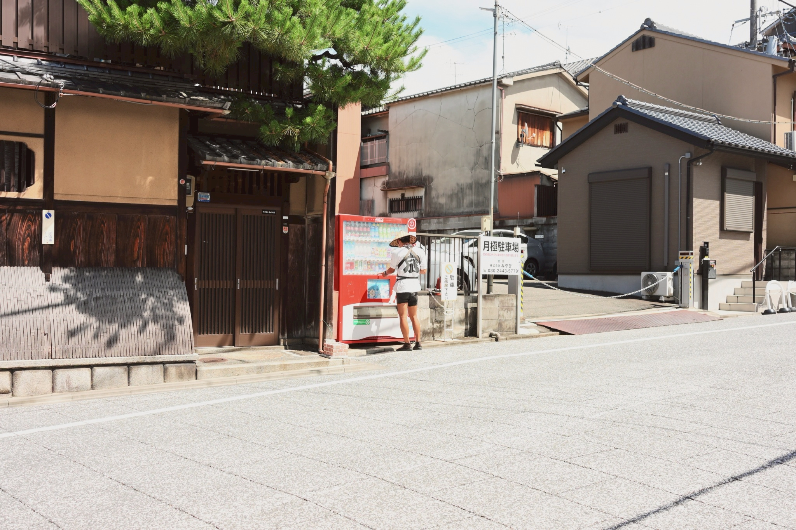
當時就挺突然的，就想試試看京都的抹茶，隨意走進一間店，邱昀就告訴我這是最有名的店。看來我似乎對找店的直覺還挺不錯的。
這杯抹茶的顏色深邃而濃郁，泡沫細膩綿密，展現了京都茶道的精髓。品嚐正宗的京都抹茶，感受那種苦甜交融的層次感，是這趟旅程中不可錯過的文化體驗。每一口都彷彿在品味京都千年的茶文化。
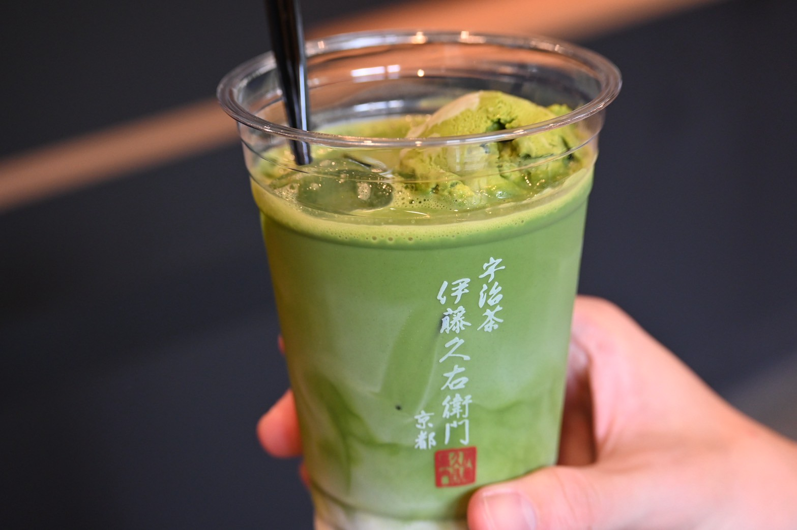
由於我們將最後一天訂為採購日，這天大概就是最後一天的遊玩行程了。我們首先來到的嵐山的竹林小徑，一邊說著日本的竹林很整齊的同時。
邱昀攝下了我們找很多天，很吵卻都看不到本體的蟬兒。這張竹林照片展現了日本園藝的精緻美學，每根竹子都筆直挺立，陽光透過竹葉灑下斑駁的光影，創造出一種禪意十足的氛圍。
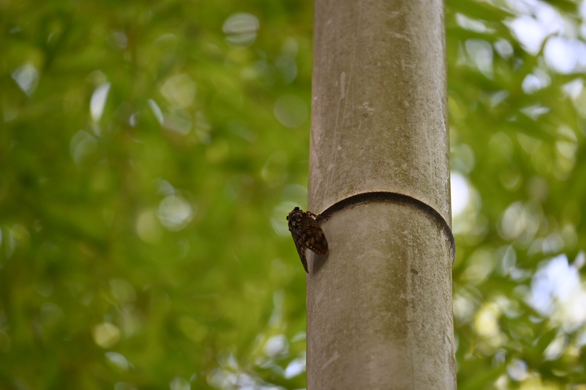
隨處可見的日本版斯文豪氏攀木蜥蜴，我覺得石龍子特別可愛。邱昀如果看到我這樣說可能會生氣吧，因為她覺得所有生物都是平等的一樣可愛。
這隻小蜥蜴在石頭上悠閒地曬太陽，完全不怕我們的接近。牠小巧的身軀和靈活的姿態，展現了自然界中微小生命的美好。透過鏡頭記錄這些細微的生命瞬間，也是旅行中意外的收穫。
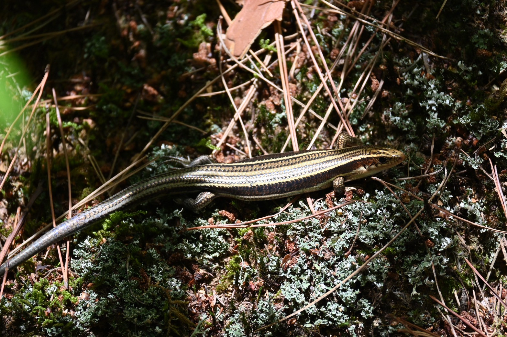
我們從竹林小徑一路晃到嵐山觀景台，越過渡月橋後再一路經過山路前往猴子公園。山路是真的挺漂亮的，邱昀按了一下快門就拍出很好看的我。
我大概按了30張，總算在其中有一張水平是平的照片。這種攝影技術的差距讓我既佩服又自嘲，但也正是這些有趣的對比，讓我們的旅程充滿了歡樂和回憶。
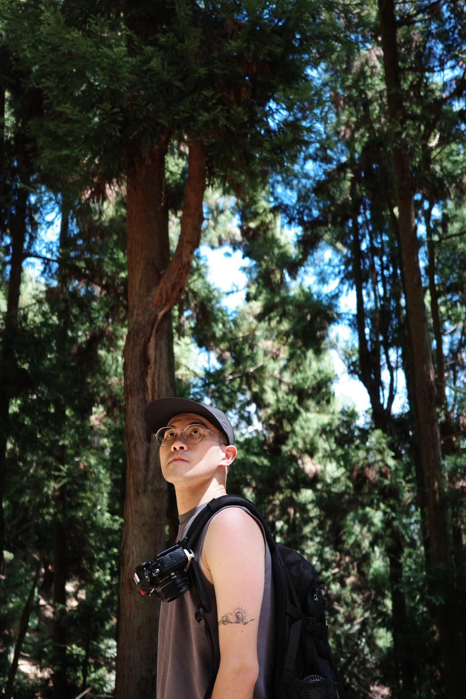
現在那張照片是邱昀的Line頭貼（還是挺有成就感的呢）。這張森林中的邱昀照片成為了我攝影技術的小小驕傲。
在蔥鬱的森林背景下，邱昀自然的笑容和姿態被完美捕捉。雖然我拍了30張才有一張水平的，但這張照片的成功讓我證明了即使是攝影菜鳥，偶爾也能拍出讓人滿意的作品。
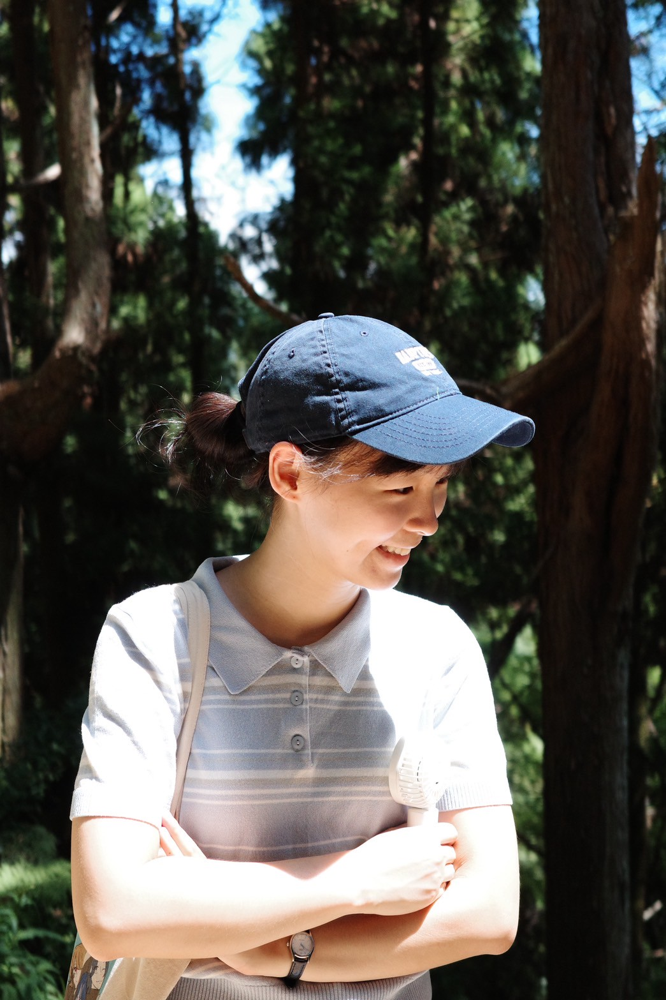
日本獼猴本猴好小，而且跟台灣獼猴比起來溫馴很多。邱昀說猴子好可愛，但是看到他們的棲地被介入還是很難過。
這隻小獼猴坐在欄杆上，眼神中帶著一種淡淡的憂鬱。雖然牠們已經習慣了人類的存在，但那種被圈養的無奈還是讓人感到一絲心酸。這張照片讓我們反思人類與自然的關係。
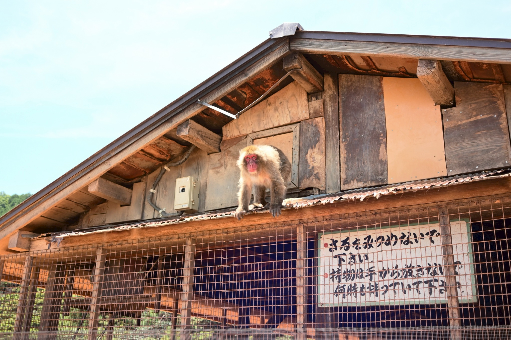
下午我們來到了京都水族館。雖然最有名的是大鯢，但是我們在認真拍企鵝。這張魚群游弋的照片展現了水中世界的寧靜美感。
透過玻璃觀看這些優雅游動的魚群，彷彿進入了一個夢幻的水底世界。每一條魚的游姿都充滿了韻律感，在水中劃出優美的弧線。
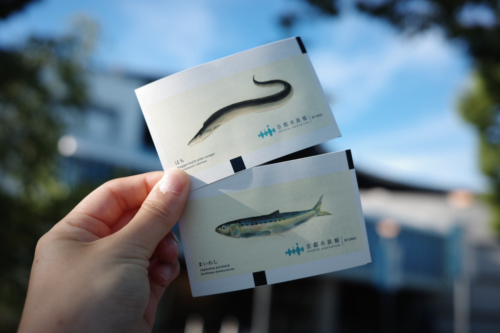
邱昀拍到可以投稿的光影企鵝，但是我們不敢問飼育員這隻企鵝的名字。這張照片完美展現了邱昀的攝影天賦。
光線透過水面投射在企鵝身上，創造出如夢似幻的光影效果。企鵝優雅的姿態在這種光影下顯得更加動人，這種攝影技巧讓人嘆為觀止。確實是可以投稿的水準！
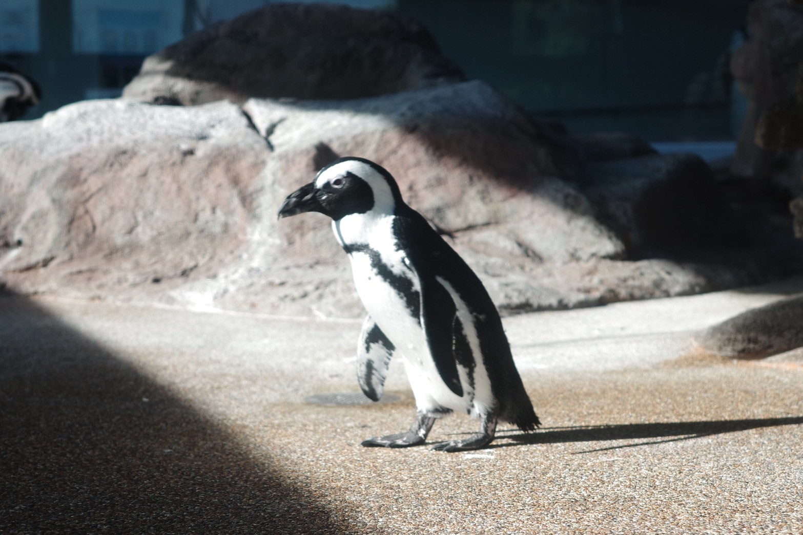
除了京都水族館，我們也去了鐵道博物館。這裡展示了日本鐵路發展的歷史，從蒸汽火車到現代的新幹線，每一輛列車都承載著時代的記憶。
這張火車照片捕捉了經典蒸汽機車的威嚴氣勢。黑色的車身在燈光下散發著金屬的光澤，彷彿能聽到它曾經馳騁在鐵軌上的轟鳴聲。
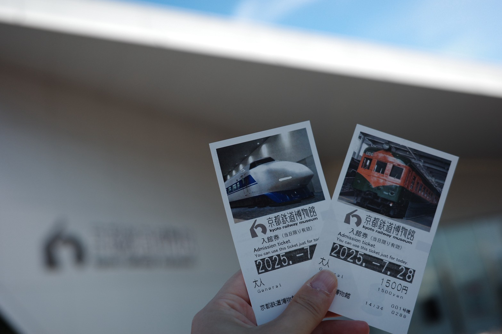
邱昀除了可以拍出光影企鵝，也能拍出光影的我。這張照片同樣展現了她對光線運用的精準掌握。
在鐵道博物館的環境中，我與古老的火車形成了有趣的對比。邱昀再次證明了她的攝影實力，將普通的人像拍攝提升到了藝術的層次。光影的運用讓整張照片充滿了戲劇張力。
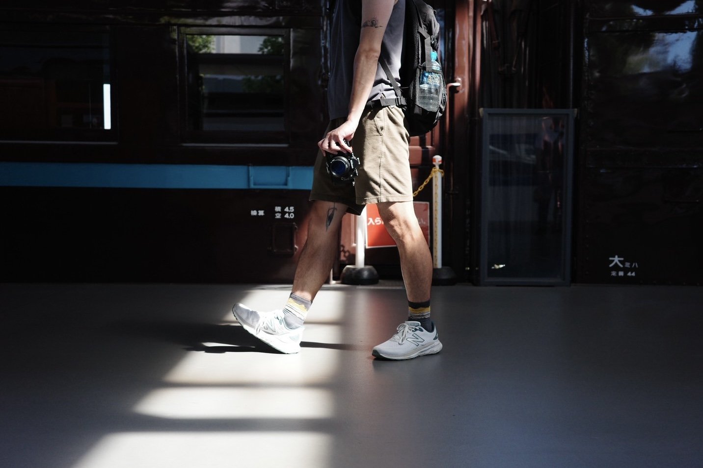
這趟旅程到這裡也接近尾聲了，我們一起走了好多的路，中間也有不少的摩擦。我選擇把兩個不同視角的高台放在最後。
一是想和邱昀用我們的雙手爬上靠自己能夠觸及到的高處。這張照片代表著我們靠自己的努力所能達到的高度，是一種自立自強的象徵。
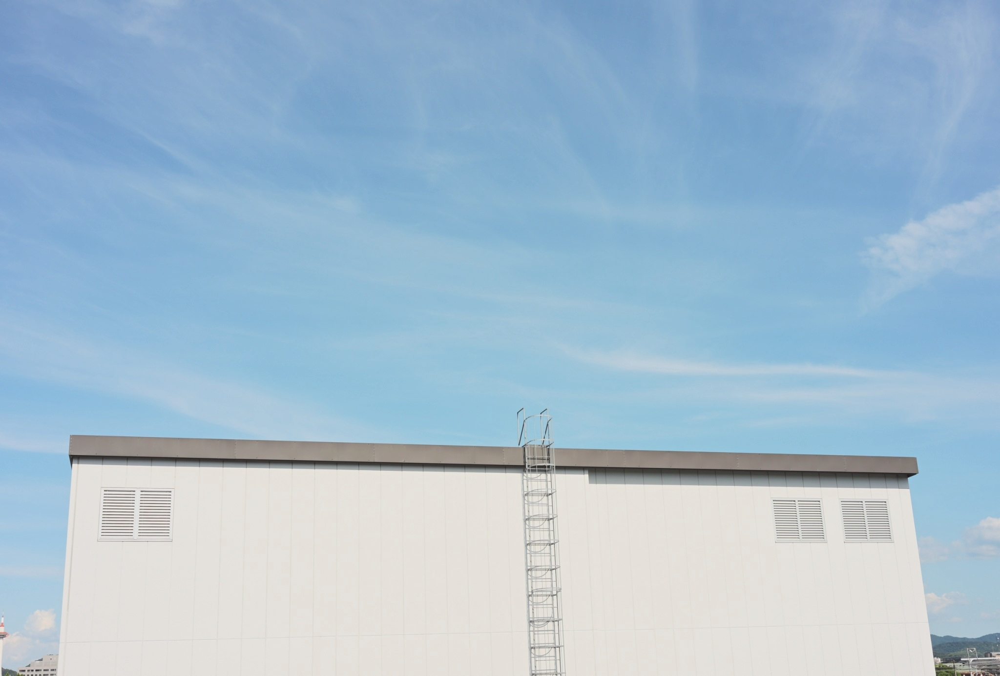
二是有時候不要過度勉強我們自己，總是有瞭望台能讓我們看得更遠。這張藍天照片象徵著另一種人生哲學。
當我們學會適度妥協，善用現有的資源，反而能獲得更廣闊的視野。這兩張高台照片詮釋了人生的兩種態度：努力攀登與智慧選擇。
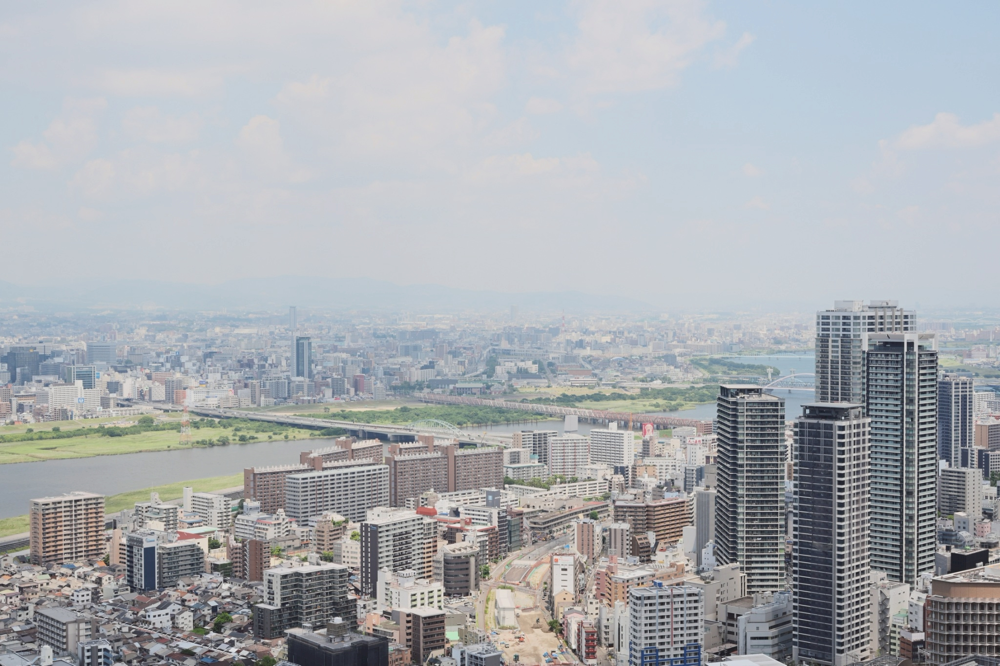
邱昀回程時拍到超厲害的照片，讓我開始期待下一次的旅行了。
這張回程照片為我們的日本之旅劃下了完美的句號。透過飛機窗戶看到的景色，不僅是對這次旅程的告別，更是對下一次冒險的期待。每一次旅行都是一個新的開始，每一張照片都是一份珍貴的回憶。
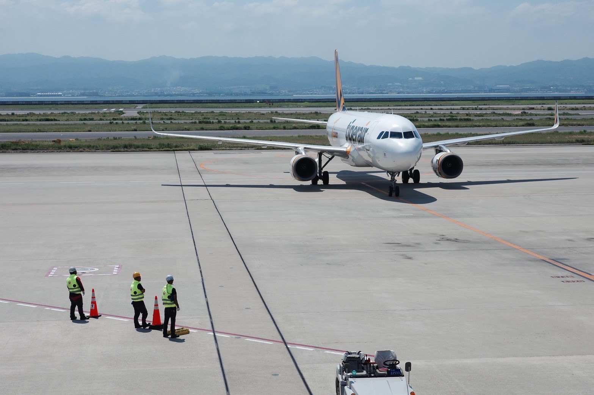
用數字記錄這趟難忘的日本關西之旅
7天6夜的精彩旅程
大阪・京都・奈良
25+ 張珍貴回憶
地鐵・電車・新幹線
神社・寺廟・博物館・公園
第一次一起的海外旅行
這趟旅程到這裡也接近尾聲了，我們一起走了好多的路，中間也有不少的摩擦。我選擇把兩個不同視角的高台放在最後：
一是想和邱昀用我們的雙手爬上靠自己能夠觸及到的高處，二是有時候不要過度勉強我們自己，總是有瞭望台能讓我們看得更遠。
邱昀回程時拍到超厲害的照片，讓我開始期待下一次的旅行了。這趟日本關西之旅不僅讓我們看到了美麗的風景，更重要的是我們一起克服了困難，在磨合中成長。
從一開始的緊張不安，到後來的享受每一個當下；從住宿的小意外，到攝影技術的較量；從導航的小爭執，到最後兩個高台的人生感悟。每一張照片、每一個景點、每一次體驗，都成為了我們共同記憶中珍貴的片段。
期待下一次，我們能再次踏上旅程，用相機記錄更多美好，用心感受更多精彩。